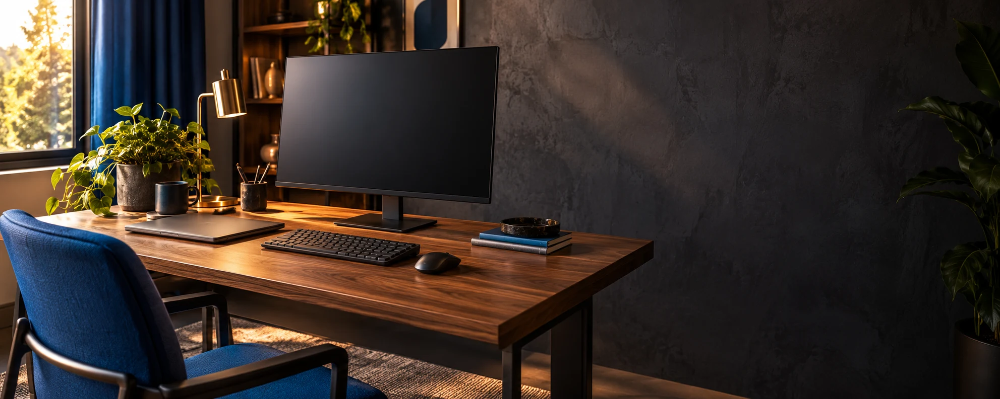

TECHAPROVADO · GUIAS DE COMPRA
Seu setup precisa trabalhar a seu favor.
Mais conforto e escolhas que fazem sentido para trabalhar, estudar e criar.

Qual Nintendo Switch comprar em 2026? Comparamos 5 opções em 3 perfis — Switch Lite, Switch OLED e Switch 2 — com tela, TV, armazenamento e jogos explicados.
Ler guia completo
Qual PS5 comprar em 2026? Comparamos 6 opções em 3 perfis — PS5 Slim digital ou com disco, PS5 Pro e os acessórios Portal e VR2 — com leitor de disco, TV e armazenamento explicados.
Ler guia completo
Qual console portátil de PC comprar em 2026? Comparamos 4 modelos em 2 perfis — Windows com Xbox (ROG Xbox Ally, Ally X e X20) e SteamOS (Legion Go S) — com processador, tela e bateria explicados.
Ler guia completo
Qual headset gamer comprar em 2026? Separamos 15 modelos em 3 perfis — com fio, sem fio para PC e para PS5 e Xbox — do custo-benefício ao top de linha, com conexão, microfone e som espacial explicados.
Ler guia completo
Qual SSD comprar em 2026? Separamos 12 modelos em 3 perfis — SATA para PC antigo, NVMe M.2 para PC, notebook e PS5, e externo portátil — com velocidade, formato e durabilidade explicados.
Ler guia completo
Qual webcam comprar em 2026? Separamos 15 modelos em 3 perfis — barata para aula e chamada, home office e streaming — do custo-benefício ao top de linha, com resolução, quadros por segundo e correção de luz explicados.
Ler guia completo
Qual impressora comprar em 2026? Separamos 15 modelos em 3 perfis — casa e escola, laser preto e branco e escritório — com tanque de tinta, laser, ADF e frente e verso explicados.
Ler guia completo
Qual controle comprar em 2026? Separamos 15 modelos em 3 perfis — PC e Android, Xbox e PS5, e celular — com Hall Effect, drift, 1.000 Hz e compatibilidade explicados.
Ler guia completo
Qual roteador Wi-Fi comprar em 2026? Separamos 15 modelos por perfil — apartamento, casa grande com mesh e jogos com fibra de 1 Giga — do custo-benefício ao top de linha, com Wi-Fi 6 e Wi-Fi 7 explicados.
Ler guia completo
Qual teclado comprar em 2026? Separamos 24 teclados em 4 perfis — trabalho, Bluetooth para vários aparelhos, gamer mecânico e magnético — do custo-benefício ao top de linha.
Ler guia completo
Qual kit teclado e mouse comprar em 2026? Separamos 29 kits em 5 perfis — com fio, sem fio, compacto e Bluetooth, ergonômico e gamer — e dizemos quando vale comprar o kit e quando comprar separado.
Ler guia completo
Guia de mouse 2026: com fio, sem fio, Bluetooth, ergonômico vertical e gamer explicados, com o melhor mouse de cada faixa de preço, do Logitech M90 ao G PRO X SUPERLIGHT 2.
Ler guia completo
Guia de monitor 2026: tamanho, painel IPS ou VA, resolução Full HD, QHD e 4K, taxa de atualização e OLED explicados, com o melhor monitor de cada faixa de preço.
Ler guia completo
Guia de notebook 2026: processador, memória RAM, SSD, tela e placa de vídeo explicados, com o melhor notebook de cada faixa de preço, do Vivobook ao MacBook Pro M5.
Ler guia completo📲 GUIAS E DICAS NO SEU FEED
Dicas práticas antes de comprar, em carrosséis e vídeos curtos, sempre com link para o guia completo.